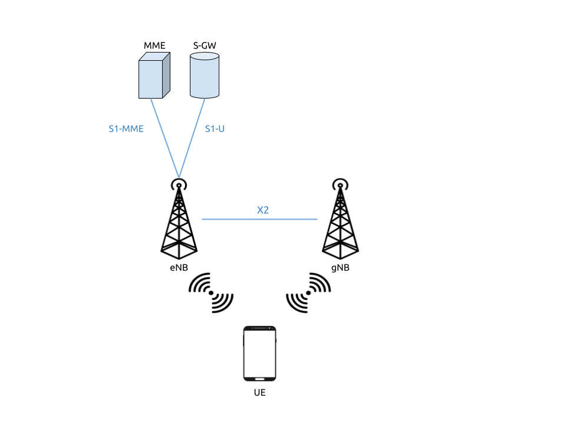
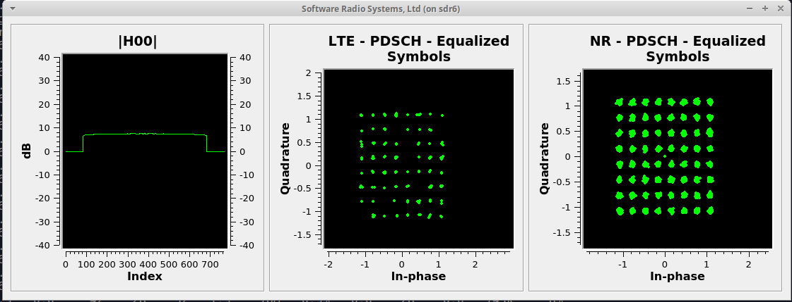

5G NSA End-to-End
Tip
The srsENB supports prototype 5G features for both NSA and SA modes of operation however, these features are no longer under active development. Instead we recommend the srsRAN Project, our ORAN-native 5G CU/DU solution.
The 21.10 release of srsRAN brings 5G NSA support to the SRS eNodeB application (srsENB). 5G NSA features can be enabled via the srsENB configuration files. This application note shows how to create an end-to-end 5G NSA Network using srsUE, srsENB and srsEPC. The ZMQ virtual radio is used in place of physical RF hardware.
5G NSA Overview

5G NSA Mode 3
5G Non-Standalone mode provides 5G support by building upon and using pre-existing 4G infrastructure. A secondary 5G carrier is provided in addition to the primary 4G carrier. A 5G NSA UE connects first to the 4G carrier before connecting to the secondary 5G carrier. The 4G anchor is used for control plane signaling while the 5G carrier is used for high-speed data plane traffic.
This approach has been used for the majority of commercial 5G network deployments to date. It provides improved data rates while leveraging existing 4G infrastructure. UEs must support 5G NSA to take advantage of 5G NSA services, but existing 4G devices are not disrupted.
Network & Hardware Overview
For this application note we will be using ZeroMQ in place of physical RF hardware. A detailed outline of how to install and use ZMQ with srsRAN can be found here. This app note will assume prior knowledge of use of ZMQ with srsRAN.

Simplified overview of the network architecture
This set up requires the following:
srsUE running in a seperate network namespace
srsENB configured so that both an LTE eNB, and an NSA gNB cell are created at run time
srsEPC with the UE included in the list of subscribers
Using RF-Hardware
To create a physical end-to-end network using RF-hardware, the following is required:
Network Element |
RF-Frontend |
Linux based PC |
|---|---|---|
srsUE |
X3xx USRP |
X |
srsENB & srsGNB |
X3xx USRP |
X |
srsEPC |
X |
Such a set-up requires two X3xx series USRPs and 2 Linux PCS.
It is recommended to use an X3xx series USRP with a UBX Daughterboard. Other RF hardware featuring dual channel Tx and Rx with independent RF chains may also be supported.
Network Configuration
Changes need to be made to the configuration files of srsUE and srsENB. These changes enable the use of ZMQ and also enable the 5G NSA carrier in srsENB. No srsEPC configuration changes are required.
Example config files used in this note are available for download. Only modified configs are included here, default configs can be used elsewhere. All changes are outlined in the following sections.
srsUE
For srsUE the relevant changes need to be made to ue.conf to enable ZMQ and 5G NR capabilities.
ZMQ
As per the description in the ZMQ app-note, to enable ZMQ the device_name and device_args must be changed in the [rf] section:
device_name = zmq
device_args = tx_port0=tcp://*:2001,rx_port0=tcp://localhost:2000,tx_port1=tcp://*:2101,rx_port1=tcp://localhost:2100,id=ue,base_srate=23.04e6
Here we add two TX and two RX channels to support both the 4G primary and 5G secondary carriers, as outlined in the network diagram.
To complete the ZMQ set-up, the network namespace netns must be set under the [gw] settings:
[gw]
netns = ue1
NR RAT
The 5G NR capabilities of the UE must also be enabled in the config under the [rat.nr] section:
[rat.nr]
bands = 3,78
nof_carriers = 1
Here we enable bands 3 and 78, which are FDD and TDD frequency bands respectively. By including both in the UE config, we can test each duplex mode simply by configuring the network.
The number of NR carriers needs to be set to 1, or else the UE will not be able to connect to the gNB. If this was not set, it would result in the UE only having an LTE connection.
Release
As NSA Mode is part of 3GPP release 15, this must be reflected in the config. The default release used is 8. Add the following entry under the [rrc] field:
[rrc]
release = 15
srsENB
Changes need to be made to both enb.conf and rr.conf to enable 5G NSA.
eNB Config
First the the changes required to enable ZMQ should be made. This involves changing the device_name and device_args in the [rf] section:
device_name = zmq
device_args = fail_on_disconnect=true,tx_port0=tcp://*:2000,rx_port0=tcp://localhost:2001,tx_port1=tcp://*:2100,rx_port1=tcp://localhost:2101,id=enb,base_srate=23.04e6
Similarly to the UE there are two TX and two RX channels. These channels are mapped to the relevent ports configured on the UE.
No other changes are needed in the enb.conf.
RRC Config
The main change to the rr.conf file is the addition of the NR cell to the cell list. This is added to the end of the file:
nr_cell_list =
(
{
rf_port = 1;
cell_id = 0x02;
tac = 0x0007;
pci = 500;
root_seq_idx = 204;
// TDD:
//dl_arfcn = 634240;
//band = 78;
// FDD:
dl_arfcn = 368500;
band = 3;
}
);
Here we have added both the TDD and FDD configs. For this example we will be using the FDD configuration, so the TDD configuration is commented out. The TDD and FDD configs can be swapped by stopping srsENB, making the necessary changes to this file, and restarting srsENB.
Network Set-up
With the above configurations, the network can now be started. Run the EPC first, followed by the eNodeB and the UE.
EPC
First run the EPC:
sudo srsepc
You should then see a similar output to the following:
HSS Initialized.
MME S11 Initialized
MME GTP-C Initialized
MME Initialized. MCC: 0xf001, MNC: 0xff01
SPGW GTP-U Initialized.
SPGW S11 Initialized.
SP-GW Initialized.
eNB
Next run the eNB/ gNB:
sudo srsenb
The following output, or similar, will be seen if srsENB as started correctly:
Opening 2 channels in RF device=zmq with args=fail_on_disconnect=true,tx_port0=tcp://*:2000,rx_port0=tcp://localhost:2001,tx_port1=tcp://*:2100,rx_port1=tcp://localhost:2101,id=enb,base_srate=23.04e6
CHx base_srate=23.04e6
CHx id=enb
Current sample rate is 1.92 MHz with a base rate of 23.04 MHz (x12 decimation)
CH0 rx_port=tcp://localhost:2001
CH0 tx_port=tcp://*:2000
CH0 fail_on_disconnect=true
CH1 rx_port=tcp://localhost:2101
CH1 tx_port=tcp://*:2100
==== eNodeB started ===
Type <t> to view trace
Current sample rate is 11.52 MHz with a base rate of 23.04 MHz (x2 decimation)
Current sample rate is 11.52 MHz with a base rate of 23.04 MHz (x2 decimation)
Setting frequency: DL=2680.0 Mhz, UL=2560.0 MHz for cc_idx=0 nof_prb=50
Setting frequency: DL=1842.5 Mhz, UL=1747.5 MHz for cc_idx=1 nof_prb=52
Note how two cells have been created, with IDs 0 and 1. 0 is the LTE cell, and 1 is the NR cell.
If the eNB successfully attaches to the core, the console trace for the EPC should update.
UE
The UE should now be run using:
sudo srsue
If it runs and connects to the eNB/ gNB successfully, you should see something like the following:
Opening 2 channels in RF device=zmq with args=tx_port0=tcp://*:2001,rx_port0=tcp://localhost:2000,tx_port1=tcp://*:2101,rx_port1=tcp://localhost:2100,id=ue,base_srate=23.04e6
CHx base_srate=23.04e6
CHx id=ue
Current sample rate is 1.92 MHz with a base rate of 23.04 MHz (x12 decimation)
CH0 rx_port=tcp://localhost:2000
CH0 tx_port=tcp://*:2001
CH1 rx_port=tcp://localhost:2100
CH1 tx_port=tcp://*:2101
Waiting PHY to initialize ... done!
Attaching UE...
Current sample rate is 1.92 MHz with a base rate of 23.04 MHz (x12 decimation)
Current sample rate is 1.92 MHz with a base rate of 23.04 MHz (x12 decimation)
.
Found Cell: Mode=FDD, PCI=1, PRB=50, Ports=1, CP=Normal, CFO=-0.2 KHz
Current sample rate is 11.52 MHz with a base rate of 23.04 MHz (x2 decimation)
Current sample rate is 11.52 MHz with a base rate of 23.04 MHz (x2 decimation)
Found PLMN: Id=00101, TAC=7
Random Access Transmission: seq=33, tti=981, ra-rnti=0x2
RRC Connected
Random Access Complete. c-rnti=0x46, ta=0
Network attach successful. IP: 172.16.0.3
Software Radio Systems RAN (srsRAN) 13/10/2021 15:29:9 TZ:0
RRC NR reconfiguration successful.
Random Access Transmission: prach_occasion=0, preamble_index=0, ra-rnti=0xf, tti=1611
Random Access Complete. c-rnti=0x4601, ta=0
The following message RRC NR reconfiguration successful confirms that the UE has connected to the NR cell. This will be used for the data link, while the LTE cell will
be used for control messaging.
Updates will also be seen in the eNB and EPC consoles.
Testing the Network
Traffic can be sent through the network to test the connection. Using either ping or iperf3 allows traffic to be sent from the UE to the gNB. An example of using ping can
be found in the ZMQ app-note, so for this example iperf3 will be used.
iPerf
In this setup the client will run on the UE side with the server on the network side. UDP traffic will be generated at 10Mbps for 60 seconds. When running the iperf client, we use the UE network namespace and specify the network-side IP address. It is important to start the server first, and then the client.
Network-side
Start the iPerf server:
iperf3 -s -i 1
This will then listen for traffic coming from the UE.
UE-side
With the network and the iPerf server up and running, the client can be run from the UE’s network namespace with following command:
sudo ip netns exec ue1 iperf3 -c 172.16.0.1 -b 10M -i 1 -t 60
Traffic will now be sent from the UE to the eNB. This will be shown in both the server and client consoles, and also in the trace for both the UE and the eNB. Example client iPerf output:
Connecting to host 172.16.0.1, port 5201
[ 5] local 172.16.0.2 port 52484 connected to 172.16.0.1 port 5201
[ ID] Interval Transfer Bitrate Retr Cwnd
[ 5] 0.00-1.00 sec 954 KBytes 7.81 Mbits/sec 0 79.2 KBytes
[ 5] 1.00-2.00 sec 1.12 MBytes 9.44 Mbits/sec 0 126 KBytes
[ 5] 2.00-3.00 sec 1.00 MBytes 8.39 Mbits/sec 12 49.5 KBytes
[ 5] 3.00-4.00 sec 640 KBytes 5.24 Mbits/sec 2 42.4 KBytes
[ 5] 4.00-5.00 sec 512 KBytes 4.19 Mbits/sec 2 39.6 KBytes
[ 5] 5.00-6.00 sec 512 KBytes 4.19 Mbits/sec 2 33.9 KBytes
Example server iPerf output:
-----------------------------------------------------------
Server listening on 5201
-----------------------------------------------------------
Accepted connection from 172.16.0.2, port 52482
[ 5] local 172.16.0.1 port 5201 connected to 172.16.0.2 port 52484
[ ID] Interval Transfer Bitrate
[ 5] 0.00-1.00 sec 634 KBytes 5.19 Mbits/sec
[ 5] 1.00-2.00 sec 950 KBytes 7.78 Mbits/sec
[ 5] 2.00-3.00 sec 977 KBytes 8.00 Mbits/sec
[ 5] 3.00-4.00 sec 533 KBytes 4.36 Mbits/sec
[ 5] 4.00-5.00 sec 553 KBytes 4.53 Mbits/sec
[ 5] 5.00-6.00 sec 537 KBytes 4.40 Mbits/sec
UE Trace
The UE console trace can be enabled by entering t on the UE console. The trace is updated every second.
Note
The time interval between metrics reports can be changed in the UE config file under the [general] field, by changing the value of metrics_period_secs.
If traffic is being successfully sent across the network, then the UE console trace should like something like this:
---------Signal-----------|-----------------DL-----------------|-----------UL-----------
rat pci rsrp pl cfo | mcs snr iter brate bler ta_us | mcs buff brate bler
lte 1 -11 11 -1.4u | 0 142 0.0 0.0 0% 0.0 | 0 0.0 0.0 0%
nr 500 1 0 23u | 27 70 1.0 8.5M 0% 0.0 | 28 36k 8.3M 0%
lte 1 -11 11 -1.4u | 0 142 0.0 0.0 0% 0.0 | 0 0.0 0.0 0%
nr 500 1 0 23u | 27 70 1.0 9.2M 0% 0.0 | 28 24k 8.1M 0%
lte 1 -11 11 -1.4u | 0 142 0.0 0.0 0% 0.0 | 0 0.0 0.0 0%
nr 500 2 0 23u | 27 69 1.0 4.6M 0% 0.0 | 28 19k 4.2M 0%
lte 1 -11 11 -1.3u | 0 142 0.0 0.0 0% 0.0 | 0 0.0 0.0 0%
nr 500 2 0 23u | 27 69 1.0 5.0M 0% 0.0 | 28 26k 4.8M 0%
lte 1 -11 11 -1.4u | 0 142 0.0 0.0 0% 0.0 | 0 0.0 0.0 0%
nr 500 2 0 23u | 27 69 1.0 4.7M 0% 0.0 | 28 28k 4.7M 0%
The rat field reports if a metric is associated with the NSA 5G link (nr), or with the LTE link (lte).
eNB/ gNB Trace
The eNB/ gNB trace can also be enabled by entering t on the console. The metrics are reported every second.
Note
This can also be changed in the eNB config file, under the [expert] heading, by changing the value of metrics_period_secs.
The console trace should look like the following if traffic is being transmitted successfully:
-----------------DL----------------|-------------------------UL-------------------------
rat rnti cqi ri mcs brate ok nok (%) | pusch pucch phr mcs brate ok nok (%) bsr
lte 46 15 0 0 0 0 0 0% | n/a n/a 0 0 0 0 0 0% 0.0
nr 4601 n/a 0 27 6.9M 124 0 0% | n/a n/a 0 0 6.1M 95 0 0% 0.0
lte 46 15 0 0 0 0 0 0% | n/a n/a 0 0 0 0 0 0% 0.0
nr 4601 n/a 0 27 4.4M 92 0 0% | n/a n/a 0 0 4.2M 76 0 0% 0.0
lte 46 15 0 0 0 0 0 0% | n/a n/a 0 0 0 0 0 0% 0.0
nr 4601 n/a 0 27 5.2M 113 0 0% | n/a n/a 0 0 5.0M 94 0 0% 0.0
lte 46 15 0 0 0 0 0 0% | n/a n/a 0 0 0 0 0 0% 0.0
nr 4601 n/a 0 27 5.4M 118 0 0% | n/a n/a 0 0 5.3M 99 0 0% 0.0
lte 46 15 0 0 0 0 0 0% | n/a n/a 0 0 0 0 0 0% 0.0
nr 4601 n/a 0 27 7.6M 156 0 0% | n/a n/a 0 0 7.2M 129 0 0% 0.0
Similarly to the UE console trace, the rat field denotes which link the metrics reported are associated with.
GUI

srsGUI is also supported for use with the UE in NSA mode. An example of the plots produced can be seen above.
To enable srsGUI, see here.
Note
If you have already built srsRAN without srsGUI support, you must re-do so after srsGUI has been built.